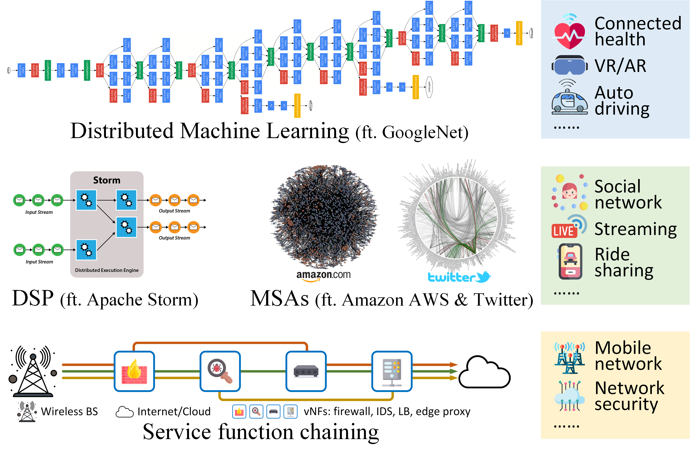

WolfPack: Application-Network Co-Design for Edge Resource Provisioning
This project is supported by NSF CAREER Award #2045539 (2021/07/01-2026/06/30):
This project is recruiting undergraduate students interested in edge computing, microservices, and machine learning applications.
Selected students will be developing microservice-based applications and measurement frameworks for testing the performance of microservices under different computing and network configurations, under guidance by current graduate students. Students can receive CSC 498/499 credits, and/or NSF REU funding from one of the PI’s NSF projects.
An ideal candidate may have (or is en route learning) skills for network programming (socket, TCP/IP, etc.). Experiences with Linux containers and Kubenetes are a plus. Expected level of efforts is 10 to 15 hours a week for the project. To receive NSF REU funding, a student is required to be a US citizen or a permanent resident.
- Recruitment open for: Summer 2023, Fall 2023.
- Interested applicants: please send your CV and transcripts to Mr. Zhouyu Li (zli85@ncsu.edu) and Dr. Ruozhou Yu (ryu5@ncsu.edu).
|
Project Description
| |
|  | Modern distributed computing applications have extremely complex structures. Examples include microservice-based applications such as Twitter, Netflix, Uber, and IoT, which can consist of thousands of microservices, loosely coupled through API calls. Such structural complexity poses significant challenges when these applications are looking to leverage edge computing, our next-gen computing paradigm, which provides low-latency and high-throughput computing proximal to end users. This project addresses the performance issue of large-scale distributed applications by employing an application-network co-design approach: simultaneously configuring computing and networking resources for end-to-end performance guarantee. Two developments will result from this project: the WolfPack, a theoretical framework for app-network co-design optimization; and the WolfBench, a systematic benchmark for app-network co-designed applications in realistic edge computing environments. |
|
Personnel
| |
Dr. Ruozhou Yu PI@NCSU |
Zhouyu Li (PhD student @ NCSU) Fangtong Zhou (PhD student @ NCSU) Xiaojian Wang (PhD student @ NCSU) Huayue Gu (PhD student @ NCSU) |
|
Publications and Pre-prints
| |
|
|
|
Datasets and Artifacts
| |
|
|
|
|